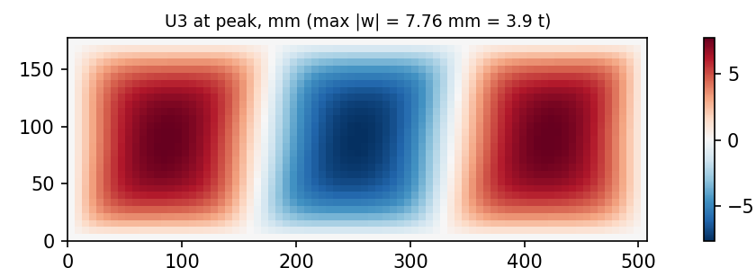
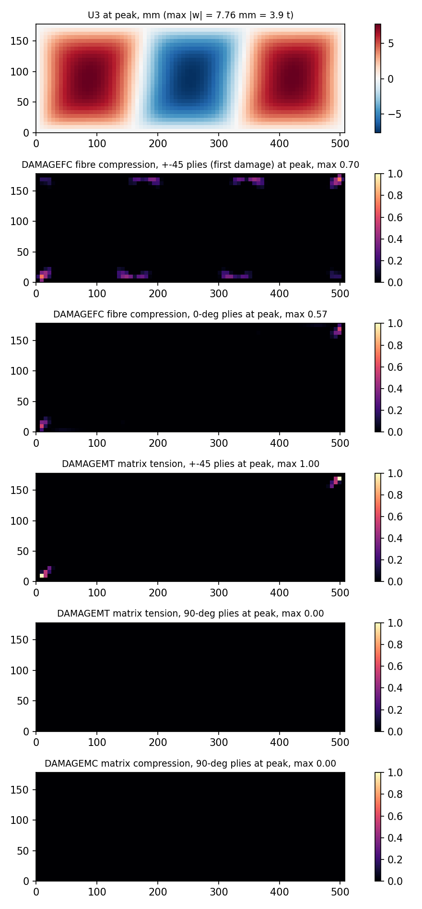
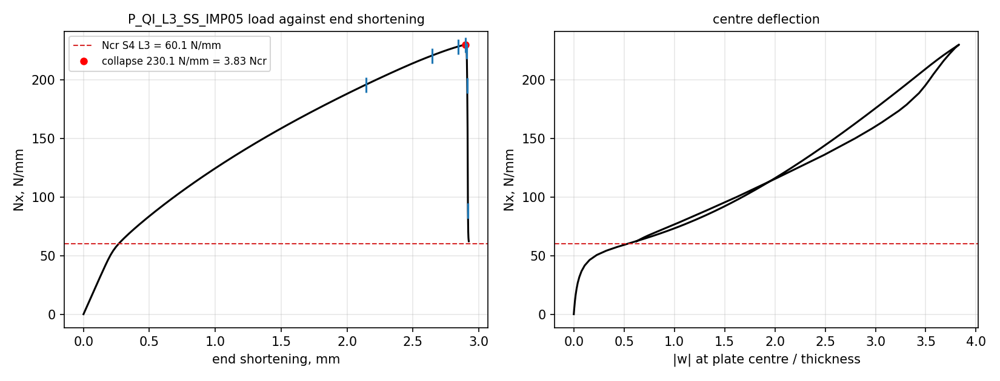
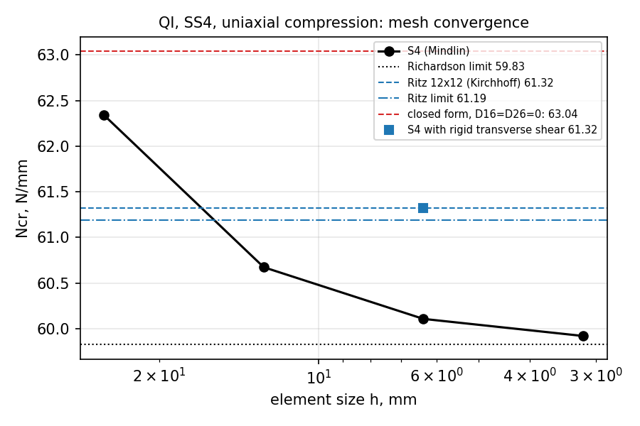
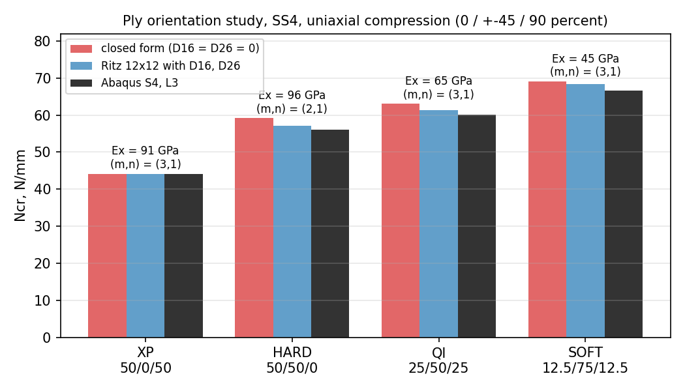

Composite Fuselage Skin Bay: Buckling and Postbuckling Collapse
- Solver
- Abaqus/Standard, S4 shells, Hashin damage
- Validated against
- Closed form, Ritz series and CLT first-ply failure
- Headline
- 3.83× Ncrcollapse at 230 N/mm
- Material
- IM7/8552, four layups

Problem
A narrow-body fuselage is a stiffened shell, and between two frames and two stringers the skin is a thin rectangular plate: in compression on the crown under fuselage bending, in in-plane shear under torsion. The design question is not simply when the material fails, but when the plate loses its flat shape and what reserve remains after it does. Metallic fuselages routinely buckle below limit load and carry on in the postbuckled state; composite skins increasingly do the same, and that reserve is only usable if it is quantified. This study builds a class-typical carbon-epoxy skin bay (508 by 178 by 2.0 mm, IM7/8552, sixteen plies) and quantifies the three numbers that describe it: the buckling load, the first-ply-failure load, and the postbuckling collapse load, each with a validation chain and a stated licence.
Method
Four layups were built (quasi-isotropic baseline, fibre-dominated HARD, matrix-dominated SOFT, and cross-ply XP), simply supported on four edges as the primary, pessimistic boundary condition, with a clamped case as the stiff bound. Buckling eigenvalues came from a mesh ladder of four S4 fully-integrated shell densities, cross-checked against an independent Ritz series and the closed-form orthotropic-plate solution. First-ply failure came from classical lamination theory against Hashin and Tsai-Wu criteria. Postbuckling collapse used a geometrically nonlinear analysis with a mode-1 imperfection and energy-regularised progressive damage, run to well past the load peak.
Validation
Five checks were written down before the runs. Buckling against the Ritz series and closed form passed for the cross-ply (0.00 percent, since it has no bend-twist coupling to expose a difference) but missed the declared 1.5 percent band by 2.0 to 2.5 percent on the other three layups. That miss was not left as an unexplained failure: a rigid-transverse-shear diagnostic isolated the cause as genuine Mindlin-shell transverse shear flexibility, which the Kirchhoff references exclude by construction, and reproduced the converged reference to 0.2 percent once accounted for. The band itself is recorded as failed, honestly, rather than quietly widened. First-ply failure matched the hand CLT calculation to 0.00 percent in every one of sixteen plies, a check that also caught two input errors before they could corrupt anything downstream. Shear buckling reproduced a 41 percent sign asymmetry between the two shear directions, driven by bend-twist coupling, and the sign convention was proven by mode-shape correlation rather than assumed.
Headline results
| Quantity | Value |
|---|---|
| Buckling load, Ncr (S4 production mesh) | 60.1 N/mm |
| Buckling load, Ncr (Ritz / closed form) | 61.3 / 63.0 N/mm |
| Buckling load, clamped bound | 108.1 N/mm |
| First-ply failure (Hashin / Tsai-Wu) | 903 / 909 N/mm |
| FPF ÷ Ncr | 15× |
| Postbuckling collapse load | 230 N/mm = 3.83 × Ncr |
| Imperfection sensitivity of collapse (10× amplitude range) | <1% |
The counter-intuitive finding is in the ply orientation study: the cross-ply layup has the highest axial modulus (90.6 GPa) and the lowest buckling load (44.0 N/mm), while the softest layup has the lowest modulus and the highest buckling load (66.6 N/mm), because at this plate's aspect ratio buckling is dominated by the twisting stiffness term D12 + 2D66, which ±45 plies feed and 0/90 plies starve. Membrane stiffness and bending stability are different properties, and a skin layup should be chosen for the one that governs.
Figures




Limitations
- The collapse load is a result for an idealised simply supported corner, not a fastened stringer-frame clip; a real bay has a joint there, which this model does not represent.
- No delamination is modelled. At four thicknesses of buckle deflection a real laminate may delaminate at the crests before fibre compression governs at the corners.
- Two of the four fracture energies used in the damage model are memory-sourced rather than freshly traced, though a sensitivity sweep shows the collapse load moves by under 1 percent when they are halved.
- Only pure compression and pure shear were run, not the combined loading a real bay actually sees.
- No specific aircraft is claimed; the geometry and layup are class-typical numbers for a narrow-body skin bay.